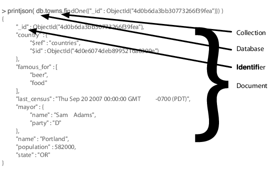

{% include JB/setup %}
{% raw %}
<div>

<h2 id="N15150" class="calibre18">5.1 Hu(mongo)us</h2>
<p id="N15154" class="calibre5">
    Mongo hits a sweet spot between the powerful queryability of a relational database and the distributed nature of other datastores like Riak or HBase. Project founder Dwight Merriman has said that MongoDB is the database he wishes he’d had at DoubleClick, where as the CTO he had to house large-scale data while still being able to satisfy ad hoc queries.
  </p>
<div class="figure" id="fig.mongoDocument">
<div class="calibre2">

</div>
<div class="figurecaption">
<hr class="calibre28"/>Figure 20. A Mongo document printed as JSON</div>
</div>
<p id="N15167" class="calibre5">
    Mongo is a JSON document database (though technically data is stored in a binary form of JSON known as BSON). A Mongo document can be likened to a relational table row without a schema, whose values can nest to an arbitrary depth. To get an idea of what a JSON document is, check out Figure 20, <a href="#fig.mongoDocument">​<em class="calibre6">A Mongo document printed as JSON</em>​</a>.
    </p>
<p id="N15174" class="calibre5">
    Mongo is an excellent choice for an ever-growing class of web projects with large-scale data storage requirements but very little budget to buy big-iron hardware. Thanks to its lack of structured schema, Mongo can grow and change along with your data model. If you’re in a web startup with dreams of enormity or are already large with the need to scale servers horizontally, consider MongoDB.
    </p>
<div class="xxxsays" id="sb.onTheFence">
<div class="heading">
<div class="persons-picture">

</div>
<div class="label">Eric says:</div>
<div class="title">On the Fence</div>
</div>
<div class="calibre2">
<p id="N15187" class="calibre5">
      I was on the fence about using a document datastore before making the switch in my own production code. Coming from the relational database world, I found Mongo to be an easy move with its ad hoc queries. And its ability to scale out mirrored my own web-scale dreams. But beyond the structure, I trusted the development team. They readily admitted that Mongo wasn’t perfect, but their clear plans (and general adherence to those plans) were based on general web infrastructure use cases, rather than idyllic debates on scalability and replication. This pragmatic focus on usability should shine as you use MongoDB. A trade-off of this evolutionary behavior is that there are several paths to performing any given function in Mongo.
    </p>
</div>
</div>
<script src="scripts/book_local.js" type="text/javascript" class="calibre3"/>
</div>

{% endraw %}

